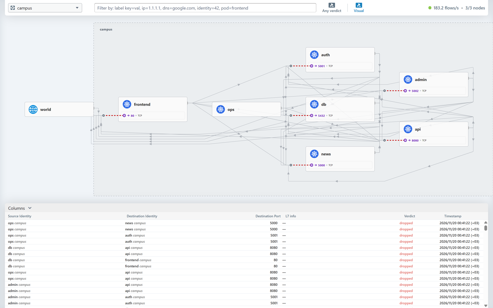

الفصل 11. قراءة الأدلة في Hubble
في الفصل 10 رأينا الهجوم يفشل. أمّا في هذا الفصل فنرى سبب فشله في سجلات Cilium نفسها. نقرأ الأسطر التي حاول فيها Pod news الوصول إلى db و admin فحصل على Policy denied، ثم الأسطر التي وصل فيها api إلى port قاعدة البيانات نفسه بعد ثوانٍ قليلة فعبر. ونرى كذلك Envoy يرفض /api/export برمز الحالة 403، ونجد استعلامات الأسماء التي أجراها المهاجم، وقد سجّلها Hubble مع أنّ كل اتصال بعدها فشل. نحفظ كل مخرج مهم في ملف نصي داخل ~/microseg/evidence ليكون جاهزاً للتقرير. نحتاج إلى ساعة ونصف تقريباً.
انتهى الفصل 10 وملفا السياسات مطبّقان، ويفترض هذا الفصل كله أنهما ما زالا كذلك. والخطوة الأولى تتحقق من ذلك.
أولاً، التحقق من أنّ Hubble يجيب
الأمر hubble لا يقرأ الـ cluster بنفسه. إنه يسأل Hubble Relay، وهو جزء من Cilium يجمع التدفقات الشبكية (flows) من كل node، ويصل إليه عبر توجيه الـ port (port-forward) الذي شغّلناه في الفصل 4 بالأمر cilium hubble port-forward &. يتوقف توجيه الـ port هذا عندما نغلق الـ terminal التي شغّلته أو نعيد تشغيل Windows، والشاشة الفارغة الناتجة عن توجيه port متوقف تشبه كثيراً شاشة «لا توجد حركة مرور». لذلك نفحص الاتصال أولاً.
cd ~/microseg
mkdir -p evidence
hubble status
kubectl -n campus get cnpينشئ mkdir -p evidence المجلد الذي نحفظ فيه مخرجات هذا الفصل، والخيار -p معناه «لا خطأ إذا كان المجلد موجوداً». أمّا hubble status فيسأل Relay عن حالته وعن عدد الـ nodes التي يجمع منها التدفقات. ويعرض kubectl -n campus get cnp السياسات الموجودة في الـ namespace campus. والاسم cnp هو الاختصار الذي يقبله Kubernetes للنوع CiliumNetworkPolicy، فلا نحتاج إلى كتابة الاسم الطويل.
ما يجب أن نراه: أسطر حالة Hubble أولاً، ثم جدول السياسات.
في جزء Hubble، السطر الذي يجب أن يطابق هو Connected Nodes: 3/3، ومعناه أنّ Relay يتلقى من الـ nodes الثلاث كلها. ويجب أن يضم جدول السياسات 10 أسماء، من admin إلى ops، وأن يحمل كل صف القيمة True تحت VALID. أمّا العمود AGE فيبين كم مضى على إنشاء كل سياسة، لذلك تختلف قيمه عندنا عن المطبوعة هنا.
إذا ظهر شيء آخر
4245: connect: connection refusedالرسالة الكاملة أطول، لكنها تحتوي هذا النص. الـ port 4245 هو الذي يستمع عليه توجيه الـ port، وعبارة «connection refused» تعني أنه لا شيء يستمع هناك، فتوجيه الـ port متوقف. الحل أن نشغّله من جديد في الخلفية بالأمر cilium hubble port-forward &، ثم ننتظر خمس ثوانٍ ونشغّل hubble status مرة أخرى. الرمز & في النهاية يرسل الأمر إلى الخلفية فيعود موجّه الأوامر إلينا.
No resources found in campus namespace.السبب أنّ السياسات غير مطبّقة. ربما أُعيد تشغيل deploy.sh، وهو يحذف الـ namespace وكل سياسة فيها. نطبّق الملفين بالأمر kubectl apply -f k8s/policies/، وننتظر عشر ثوانٍ ثم نعيد الخطوة.
إذا أظهر Connected Nodes القيمة 2/3 أو أقل، فبرنامج Cilium agent على إحدى الـ nodes لم يجهز بعد، وهذا يحدث لدقيقة أو دقيقتين بعد تشغيل Windows. نشغّل cilium status --wait وننتظر حتى ينتهي، ثم نشغّل hubble status من جديد.
حركة مرور جديدة: الهجوم وفحوص البوابة
لا يحتفظ Hubble بالتدفقات إلى الأبد. كل node تحفظ أحدثها في مخزن دائري، وهو مخزن ثابت الحجم يدفع فيه كل تدفق جديد أقدمَ تدفق إلى الخارج. ربما خرج الهجوم الذي شغّلناه في الفصل 10 من المخزن. لذلك نشغّله الآن من جديد مع فحوص البوابة، فيكون أمام الخطوات التالية حركة محجوبة وحركة مسموح بها تعرضها.
يمر الهجوم عبر لوحة التحكم التي بنيناها، فيجب أن تكون اللوحة قيد التشغيل. إذا لم تكن كذلك نفتح Ubuntu terminal ثانية ونشغّلها بالأمر cd ~/microseg/dashboard && ../.venv/bin/python app.py، ونترك تلك النافذة مفتوحة ونعود إلى الـ terminal الأولى.
curl -s -X POST localhost:5050/api/attack | jq -r '.[] | (if .success then "SUCCESS " else "FAILED " end) + .step'
bash check-portal.shيطلب السطر الأول من المسار /api/attack في لوحة التحكم أن يرسل payloads الهجوم الخمس عبر NodePort على localhost:30080، وهو الباب نفسه الذي استخدمته أوامر PowerShell في الفصل 8. نحتاج إلى -X POST لأنّ هذا المسار لا يقبل إلا طلبات POST. تجيب اللوحة بقائمة من خمس نتائج، ويحوّلها jq إلى أسطر مقروءة. الخيار -r يطبع نصاً عادياً بلا علامات اقتباس، والتعبير .[] يأخذ النتائج واحدة تلو الأخرى. أمّا if .success then "SUCCESS " else "FAILED " end فيختار كلمة لكل نتيجة، ثم يضيف + .step اسم الخطوة بعدها. يستغرق الأمر نحو 18 ثانية، لأنّ كل خطوة من الخطوات الأربع المحجوبة تنتظر انتهاء مهلتها الخاصة. ويشغّل السطر الثاني الفحوص الستة التي يجريها طالب حقيقي وفريق العمليات (ops).
ما يجب أن نراه: خمسة أسطر للهجوم، ثم فحوص البوابة.
تقول الخطوة 1 SUCCESS، وتقول الخطوات من 2 إلى 5 FAILED، وهذه هي نتيجة 1 من 5 التي رأيناها في الفصل 10. ويجب أن يكون السطر الأخير PORTAL: 6/6 OK.
إذا ظهر شيء آخر
لا يطبع الأمر الأول شيئاً على الإطلاق ويعود موجّه الأوامر فوراً. الخيار -s يخفي رسائل الخطأ في curl، فتظهر لوحة التحكم المتوقفة على شكل صمت. نشغّل اللوحة كما وصفنا أعلاه ونعيد الأمر.
الأسطر الخمسة كلها تقول SUCCESS. السبب أنّ السياسات غير موجودة، وكان على الخطوة الأولى من هذا الفصل أن تكشف ذلك. نطبّقها بالأمر kubectl apply -f k8s/policies/ وننتظر عشر ثوانٍ ثم نعيد.
فحص واحد أو أكثر من فحوص البوابة يقول FAIL. هناك تدفق مشروع محجوب يستطيع Hubble تسميته. نشغّل hubble observe --namespace campus --verdict DROPPED --last 20 ونبحث عن مصدر ووجهة موجودين في جدول التدفقات الذي كتبناه في الفصل 9. ويشرح الفصل 13 هذا النوع من البحث سؤالاً بعد سؤال.
إسقاطات Pod news، من النظرة الواسعة إلى الضيقة
يعرض الأمر الأول كل الإسقاطات الحديثة في الـ namespace، ولا يُبقي الثاني إلا على ما جاء من Pod news الذي يتمركز فيه المهاجم.
hubble observe --namespace campus --verdict DROPPED --last 8كل كلمة بعد hubble observe هي مُرشِّح، أي شرط يجب أن يحققه التدفق حتى يُطبع. يُبقي --namespace campus على التدفقات التي يكون أحد طرفيها Pod في campus. ويُبقي --verdict DROPPED على الحركة المحجوبة وحدها. ويطلب --last 8 أحدث 8 تدفقات مطابقة. يسأل Relay كل node عن أحدث 8 لديها ثم يدمجها، ولأنّ Pods الـ namespace campus موزعة على 2 worker nodes فقد نحصل على ما يصل إلى 16 سطراً.
ما يجب أن نراه: ما يصل إلى 16 سطراً، يأتي معظمها أزواجاً. في كل زوج سطر يحمل EGRESS DENIED وآخر يحمل Policy denied DROPPED، وينتهي كل سطر بأعلام TCP (TCP flags) أو بطلب HTTP بين قوسين.
الأسطر الثمانية القادمة من الـ node التي يعمل عليها news مصدرها news، لأنّ الهجوم كان آخر ما شغّلناه هناك. أمّا الأسطر الثمانية الأخرى فتأتي من الـ worker node الثانية، وعليها تعمل db و api و auth و admin و ops. وقد تظهر أيضاً إسقاطات من Pods أخرى مثل auth، ومصدرها مصفوفة قابلية الوصول (reachability matrix) في لوحة التحكم. تختبر المصفوفة عمداً المسارات المحجوبة، وكل خلية محجوبة فيها تترك خلفها إسقاطاً. وإذا ظهر سطر منفرد من campus/frontend- إلى campus/api- يحمل http-request DROPPED و /api/export فهو طلب تصدير ممنوع، مثل الطلب الذي أرسلناه في الفصل 10. رفضه Envoy، وتشرح خطوة «قراءة قرار L7» لاحقاً في هذا الفصل كيف حدث ذلك. ستختلف الطوابع الزمنية ونهايات أسماء Pods وأرقام الـ ports عندنا عمّا هو مطبوع هنا.
ولكي نحصر النتائج في إسقاطات Pod news نشغّل الأمر الثاني.
hubble observe --from-pod campus/news --verdict DROPPED --last 12 | tee ~/microseg/evidence/ch13-drops-from-news.txtيُبقي --from-pod campus/news على التدفقات التي مصدرها Pod في الـ namespace campus يبدأ اسمه بالكلمة news. نكتب بداية الاسم فقط لأنّ نهايته عشوائية وتتغير كلما استُبدل Pod. والـ namespace مكتوبة أصلاً داخل هذه القيمة، لذلك لا يمكن جمع هذا المُرشِّح مع --namespace. أمّا الرمز | فهو أنبوب (pipe)، يرسل مخرجات hubble observe إلى tee، وهو برنامج صغير يطبع ما يتلقاه على الشاشة ويكتب النص نفسه في الملف الذي نسمّيه له. هكذا نرى المخرجات، وتستقر نسخة منها في evidence/ لنستخدمها في الفصل 14.
هذه المرة يبدأ كل سطر بالطابع الزمني ثم campus/news-.
Nov 19 20:43:39.887: campus/news-545758c8c6-2jp4n:55292 (ID:53922) <> campus/db-887596757-wzmtj:5432 (ID:13907) policy-verdict:none EGRESS DENIED (TCP Flags: SYN)
Nov 19 20:43:39.887: campus/news-545758c8c6-2jp4n:55292 (ID:53922) <> campus/db-887596757-wzmtj:5432 (ID:13907) Policy denied DROPPED (TCP Flags: SYN)
Nov 19 20:43:40.911: campus/news-545758c8c6-2jp4n:55292 (ID:53922) <> campus/db-887596757-wzmtj:5432 (ID:13907) policy-verdict:none EGRESS DENIED (TCP Flags: SYN)
Nov 19 20:43:40.911: campus/news-545758c8c6-2jp4n:55292 (ID:53922) <> campus/db-887596757-wzmtj:5432 (ID:13907) Policy denied DROPPED (TCP Flags: SYN)
Nov 19 20:43:41.917: campus/news-545758c8c6-2jp4n:60310 (ID:53922) <> campus/admin-766cddb668-gr2k8:5002 (ID:5410) policy-verdict:none EGRESS DENIED (TCP Flags: SYN)
Nov 19 20:43:41.917: campus/news-545758c8c6-2jp4n:60310 (ID:53922) <> campus/admin-766cddb668-gr2k8:5002 (ID:5410) Policy denied DROPPED (TCP Flags: SYN)
Nov 19 20:43:42.923: campus/news-545758c8c6-2jp4n:60310 (ID:53922) <> campus/admin-766cddb668-gr2k8:5002 (ID:5410) policy-verdict:none EGRESS DENIED (TCP Flags: SYN)
Nov 19 20:43:42.923: campus/news-545758c8c6-2jp4n:60310 (ID:53922) <> campus/admin-766cddb668-gr2k8:5002 (ID:5410) Policy denied DROPPED (TCP Flags: SYN)
Nov 19 20:43:43.947: campus/news-545758c8c6-2jp4n:60310 (ID:53922) <> campus/admin-766cddb668-gr2k8:5002 (ID:5410) policy-verdict:none EGRESS DENIED (TCP Flags: SYN)
Nov 19 20:43:43.947: campus/news-545758c8c6-2jp4n:60310 (ID:53922) <> campus/admin-766cddb668-gr2k8:5002 (ID:5410) Policy denied DROPPED (TCP Flags: SYN)
Nov 19 20:43:44.971: campus/news-545758c8c6-2jp4n:60310 (ID:53922) <> campus/admin-766cddb668-gr2k8:5002 (ID:5410) policy-verdict:none EGRESS DENIED (TCP Flags: SYN)
Nov 19 20:43:44.971: campus/news-545758c8c6-2jp4n:60310 (ID:53922) <> campus/admin-766cddb668-gr2k8:5002 (ID:5410) Policy denied DROPPED (TCP Flags: SYN)تأتي الأسطر أزواجاً. في كل زوج يحمل السطر الأول policy-verdict:none EGRESS DENIED ويحمل الثاني Policy denied DROPPED، والمصدر والوجهة والـ port واحدة في السطرين. الوجهتان هما db على الـ port 5432 و admin على الـ port 5002. أسطر db مصدرها الخطوة 4 من الهجوم، حين حاول psql تسجيل الدخول إلى قاعدة البيانات. وقد تركت الخطوة 3 أسطراً من النوع نفسه قبل ذلك بثوانٍ، لكنها تقع خارج آخر 12 سطراً. أمّا أسطر admin فمصدرها الخطوة 5، حين حاول curl فتح لوحة الإدارة. وترك المسح في الخطوة 2 كذلك إسقاطات نحو frontend على الـ port 80 و api على 8080 و auth على 5001، لكنها أقدم، فقد تقع خارج آخر 12 سطراً.
يتكرر الزوج نفسه بفارق ثانية تقريباً ومن port المصدر نفسه. هذه الـ kernel في Linux تعيد محاولة الاتصال نيابة عن Pod news، لأنّ محاولته الأولى لم تتلقَّ جواباً. يُسقط Cilium الـ packet دون أن يرد، فلا يستطيع المرسل أن يميز port محجوباً من port بطيء، ويظل يعيد المحاولة حتى تنفد مهلته. وهذا أيضاً سبب استغراق كل خطوة محجوبة من الهجوم في الفصل 10 بضع ثوانٍ قبل أن تفشل.
إذا ظهر شيء آخر
filters --from-pod and --namespace cannot be combinedالسبب أنّ --namespace campus أُضيف إلى الأمر الثاني. نحذفه، فالجزء campus/ في بداية campus/news يحدد الـ namespace أصلاً.
لا يطبع الأمر الثاني شيئاً. معنى ذلك أنّ تدفقات الهجوم خرجت من المخزن الدائري، والسبب غالباً أنّ الوقت الذي مضى أطول مما نظن. نشغّل سطر الهجوم من الخطوة السابقة مرة أخرى، ونعيد هذا الأمر خلال دقيقة أو دقيقتين.
تنتهي الأسطر بالكلمة FORWARDED بدلاً من DROPPED، أو لا يظهر أي إسقاط بينما يقول الهجوم 5 من 5. السبب أنّ السياسات غير مطبّقة. نعود إلى الخطوة الأولى من هذا الفصل.
سطر واحد من Hubble، حقلاً حقلاً
هذا سطر واحد من تشغيل الاختبار، منسوخ من المخرجات أعلاه.
Nov 19 20:43:39.887: campus/news-545758c8c6-2jp4n:55292 (ID:53922) <> campus/db-887596757-wzmtj:5432 (ID:13907) Policy denied DROPPED (TCP Flags: SYN)نقرؤه من اليسار إلى اليمين.
| جزء السطر | معناه |
|---|---|
Nov 19 20:43:39.887: |
الوقت الذي رأى فيه Cilium الـ packet، بدقة الملّي ثانية. |
campus/news-545758c8c6-2jp4n |
المصدر، مكتوباً على شكل الـ namespace ثم شرطة مائلة ثم اسم Pod. الجزءان العشوائيان في آخره يخصان هذا Pod. |
:55292 |
port المصدر. حين يفتح برنامج اتصالاً، تختار الـ kernel لهذا الاتصال وحده port مؤقتاً شاغراً على جهة المرسل، لذلك يتغير هذا الرقم من اتصال إلى آخر. |
(ID:53922) |
رقم هوية المصدر. يعطي Cilium رقماً واحداً لكل مجموعة مميزة من labels Pods، وهي هنا app=news في الـ namespace campus، ثم يبني كل قرار من قرارات السياسة على أساس هذا الرقم، لا على أساس عنوان IP أبداً. يختار Cilium الأرقام بنفسه، فأرقامنا مختلفة، لكنّ Pod يحتفظ برقمه عند إعادة تشغيله لأنّ الـ labels الخاصة به تبقى كما هي. |
<> |
لم يستطع Hubble تحديد الاتجاه، وهذا يحدث مع الـ packets التي تُسقط قبل أن ينشأ أي اتصال. أمّا الحركة التي تعبر فيظهر فيها -> للطلب و <- للرد. |
campus/db-887596757-wzmtj:5432 |
Pod الوجهة والـ port الذي كانت الـ packet متجهة إليه، وهو هنا الـ port الخاص بـ PostgreSQL. |
(ID:13907) |
رقم هوية الوجهة، وهو الرقم الذي يخص الـ label app=db. |
Policy denied |
سبب الإسقاط، أي أنّ قرار سياسة أوقف الـ packet. أمّا Pod المتعطل أو المسار المفقود فيحمل سبباً مختلفاً. |
DROPPED |
الحكم (verdict). رُميت الـ packet ولم يُرسل أي رد. |
(TCP Flags: SYN) |
نوع TCP packet. SYN packet هي أول packet في اتصال TCP جديد، أي الطرقة على الباب التي تسأل «هل أستطيع الاتصال؟». هذا الاتصال لم يتجاوز الطرقة قط. |
أمّا السطر الآخر في كل زوج، policy-verdict:none EGRESS DENIED، فيسجل القرار لا الـ packet المُسقطة. الجزء policy-verdict يدل على أنه سطر قرار. والكلمة none تعني أنه لم تطابق أي قاعدة سماح، فكان القرار للرفض الافتراضي (default deny). ويقول EGRESS إنّ الفحص جرى والـ packet تغادر news، وسياسة news لا تحتوي قسماً للـ egress أصلاً. و DENIED هو القرار.
يمكن طباعة التدفق نفسه بصيغة JSON، وهي صيغة نصية منظمة لكل قيمة فيها اسم. وهذه الصيغة تُظهر حقولاً يتركها التنسيق ذو السطر الواحد، ومنها الـ labels التي تقف خلف رقم الهوية.
hubble observe --from-pod campus/news --verdict DROPPED --last 1 -o json | jq '{time: .flow.time, verdict: .flow.verdict, drop_reason: .flow.drop_reason_desc, source: .flow.source.pod_name, source_labels: .flow.source.labels, destination: .flow.destination.pod_name, port: .flow.l4.TCP.destination_port}'يأخذ --last 1 أحدث إسقاط فقط. ويطبعه -o json بصيغة JSON بدلاً من سطر واحد. أمّا مُرشِّح jq بين علامتي الاقتباس المفردتين فيبني كائناً أصغر، إذ ينسخ كل زوج name: .flow.something حقلاً واحداً من التدفق ويعطيه اسماً قصيراً، فلا نحتاج إلى التمرير عبر كل الحقول التي يطبعها Hubble.
ما يجب أن نراه: كائن JSON واحد فيه سبعة حقول.
{
"time": "2026-11-19T20:43:44.971447182Z",
"verdict": "DROPPED",
"drop_reason": "POLICY_DENIED",
"source": "news-545758c8c6-2jp4n",
"source_labels": [
"k8s:app=news",
"k8s:io.cilium.k8s.namespace.labels.kubernetes.io/metadata.name=campus",
"k8s:io.cilium.k8s.policy.cluster=kind-kind",
"k8s:io.cilium.k8s.policy.serviceaccount=default",
"k8s:io.kubernetes.pod.namespace=campus"
],
"destination": "admin-766cddb668-gr2k8",
"port": 5002
}الحقل "drop_reason": "POLICY_DENIED" هو سبب الإسقاط نفسه بالصيغة التي يقرؤها برنامج. وتضم القائمة source_labels الـ label k8s:app=news، وهو بالضبط الـ label الذي تختاره سياستنا news بالعبارة app: news. هذا هو الرابط بين الإسقاط وملف YAML الذي كتبناه. أمّا بقية الـ labels فيضيفها Cilium نفسه، مثل الـ namespace واسم الـ cluster kind-kind.
إذا ظهر شيء آخر
Command 'jq' not found, but can be installed with:كان من المفترض أن يُثبَّت jq في الفصل 3. نثبّته بالأمر sudo apt install -y jq ونعيد تشغيل الأمر.
يطبع أحد الحقول null. السبب خطأ إملائي في الاسم الذي يلي .flow.، مثل drop_reason_dsc. ننسخ الأمر من الدليل من جديد بدلاً من إعادة كتابته.
port واحد وهويتان
في التشغيل نفسه، وبفارق ثوانٍ قليلة، يحاول news و api كلاهما الوصول إلى Pod db نفسه على الـ port نفسه 5432. تُسقَط الـ packets الخاصة بـ news ويُسمح لاتصال api بالعبور. لا شيء في الوجهة يختلف، فالتفسير الوحيد الممكن للحكمين هو هوية المرسل.
hubble observe --to-pod campus/db --last 12 | tee ~/microseg/evidence/ch13-to-db.txtيختار --to-pod campus/db ما يتجه إلى Pod db. لا يوجد مُرشِّح --verdict هذه المرة، فتظهر الحركة المسموح بها والمحجوبة معاً. ولأنّ db يعمل على node و news على node أخرى، تقدم كل node أسطرها الاثني عشر، وقد نحصل على ما يصل إلى 24 سطراً.
ما يجب أن نراه: أسطر news التي تحمل DROPPED أولاً، ثم أسطر api و admin التي تحمل FORWARDED.
Nov 19 20:43:35.786: campus/news-545758c8c6-2jp4n:55282 (ID:53922) <> campus/db-887596757-wzmtj:5432 (ID:13907) policy-verdict:none EGRESS DENIED (TCP Flags: SYN)
Nov 19 20:43:35.786: campus/news-545758c8c6-2jp4n:55282 (ID:53922) <> campus/db-887596757-wzmtj:5432 (ID:13907) Policy denied DROPPED (TCP Flags: SYN)
Nov 19 20:43:36.815: campus/news-545758c8c6-2jp4n:55282 (ID:53922) <> campus/db-887596757-wzmtj:5432 (ID:13907) policy-verdict:none EGRESS DENIED (TCP Flags: SYN)
Nov 19 20:43:36.815: campus/news-545758c8c6-2jp4n:55282 (ID:53922) <> campus/db-887596757-wzmtj:5432 (ID:13907) Policy denied DROPPED (TCP Flags: SYN)
Nov 19 20:43:37.835: campus/news-545758c8c6-2jp4n:55282 (ID:53922) <> campus/db-887596757-wzmtj:5432 (ID:13907) policy-verdict:none EGRESS DENIED (TCP Flags: SYN)
Nov 19 20:43:37.835: campus/news-545758c8c6-2jp4n:55282 (ID:53922) <> campus/db-887596757-wzmtj:5432 (ID:13907) Policy denied DROPPED (TCP Flags: SYN)
Nov 19 20:43:38.870: campus/news-545758c8c6-2jp4n:55292 (ID:53922) <> campus/db-887596757-wzmtj:5432 (ID:13907) policy-verdict:none EGRESS DENIED (TCP Flags: SYN)
Nov 19 20:43:38.870: campus/news-545758c8c6-2jp4n:55292 (ID:53922) <> campus/db-887596757-wzmtj:5432 (ID:13907) Policy denied DROPPED (TCP Flags: SYN)
Nov 19 20:43:39.887: campus/news-545758c8c6-2jp4n:55292 (ID:53922) <> campus/db-887596757-wzmtj:5432 (ID:13907) policy-verdict:none EGRESS DENIED (TCP Flags: SYN)
Nov 19 20:43:39.887: campus/news-545758c8c6-2jp4n:55292 (ID:53922) <> campus/db-887596757-wzmtj:5432 (ID:13907) Policy denied DROPPED (TCP Flags: SYN)
Nov 19 20:43:40.911: campus/news-545758c8c6-2jp4n:55292 (ID:53922) <> campus/db-887596757-wzmtj:5432 (ID:13907) policy-verdict:none EGRESS DENIED (TCP Flags: SYN)
Nov 19 20:43:40.911: campus/news-545758c8c6-2jp4n:55292 (ID:53922) <> campus/db-887596757-wzmtj:5432 (ID:13907) Policy denied DROPPED (TCP Flags: SYN)
Nov 19 20:43:45.283: campus/api-65c5c7d5fd-2qtsk:55286 (ID:6935) -> campus/db-887596757-wzmtj:5432 (ID:13907) to-endpoint FORWARDED (TCP Flags: SYN)
Nov 19 20:43:45.283: campus/api-65c5c7d5fd-2qtsk:55286 (ID:6935) -> campus/db-887596757-wzmtj:5432 (ID:13907) to-endpoint FORWARDED (TCP Flags: ACK)
Nov 19 20:43:45.283: campus/api-65c5c7d5fd-2qtsk:55286 (ID:6935) -> campus/db-887596757-wzmtj:5432 (ID:13907) to-endpoint FORWARDED (TCP Flags: ACK, PSH)
Nov 19 20:43:45.295: campus/api-65c5c7d5fd-2qtsk:55286 (ID:6935) -> campus/db-887596757-wzmtj:5432 (ID:13907) to-endpoint FORWARDED (TCP Flags: ACK, FIN)
Nov 19 20:43:45.298: campus/api-65c5c7d5fd-2qtsk:55286 (ID:6935) -> campus/db-887596757-wzmtj:5432 (ID:13907) to-endpoint FORWARDED (TCP Flags: ACK)
Nov 19 20:43:45.620: campus/admin-766cddb668-gr2k8:42818 (ID:5410) -> campus/db-887596757-wzmtj:5432 (ID:13907) policy-verdict:L3-L4 EGRESS ALLOWED (TCP Flags: SYN)
Nov 19 20:43:45.620: campus/admin-766cddb668-gr2k8:42818 (ID:5410) -> campus/db-887596757-wzmtj:5432 (ID:13907) policy-verdict:L3-L4 INGRESS ALLOWED (TCP Flags: SYN)
Nov 19 20:43:45.620: campus/admin-766cddb668-gr2k8:42818 (ID:5410) -> campus/db-887596757-wzmtj:5432 (ID:13907) to-endpoint FORWARDED (TCP Flags: SYN)
Nov 19 20:43:45.620: campus/admin-766cddb668-gr2k8:42818 (ID:5410) -> campus/db-887596757-wzmtj:5432 (ID:13907) to-endpoint FORWARDED (TCP Flags: ACK)
Nov 19 20:43:45.620: campus/admin-766cddb668-gr2k8:42818 (ID:5410) -> campus/db-887596757-wzmtj:5432 (ID:13907) to-endpoint FORWARDED (TCP Flags: ACK, PSH)
Nov 19 20:43:45.632: campus/admin-766cddb668-gr2k8:42818 (ID:5410) -> campus/db-887596757-wzmtj:5432 (ID:13907) to-endpoint FORWARDED (TCP Flags: ACK, FIN)
Nov 19 20:43:45.637: campus/admin-766cddb668-gr2k8:42818 (ID:5410) -> campus/db-887596757-wzmtj:5432 (ID:13907) to-endpoint FORWARDED (TCP Flags: ACK)نبحث عن سطر مصدره، بعد الطابع الزمني مباشرة، هو campus/api-، ويحمل -> campus/db- و to-endpoint FORWARDED. السهم -> يقول إنه طلب، والعبارة to-endpoint تقول إنّ الـ packet سُلّمت إلى Pod الوجهة، و FORWARDED هو الحكم. ثم نقارن أرقام هويته بأسطر news فوقه. رقم هوية الوجهة هو 13907 نفسه في الحالتين، أمّا رقم هوية المصدر فيختلف، فهو 53922 عند news و 6935 عند api. أرقامنا ستختلف، لكنّ النمط يجب أن يكون واحداً، فرقم هوية الوجهة ثابت في كل الأسطر، وخلف كل حكم من الحكمين رقم مصدر مختلف.
لا يتوقف اتصال api عند SYN. تُظهر أسطره اللاحقة ACK و ACK, PSH و ACK, FIN، وهي بقية محادثة TCP عادية. يؤكد ACK الاستلام، ويميّز PSH الـ packets التي تحمل بيانات (تسجيل الدخول إلى PostgreSQL والاستعلام)، وينهي FIN الاتصال. لا يطبع Hubble سطراً لكل packet، وإنما يطبعه حين تتغير الأعلام. وتُظهر أسطر admin كذلك سطري القرار الخاصين بها، policy-verdict:L3-L4 EGRESS ALLOWED و policy-verdict:L3-L4 INGRESS ALLOWED. تعني L3-L4 أنّ قاعدة عنوان وport طابقت، مرة عند خروج الـ packet من admin ومرة عند دخولها إلى db. وسبب وجود حركة admin أنّ آخر فحص من فحوص البوابة يطلب من ops فتح لوحة الإدارة، و admin يقرأ قائمة الطلاب من db.

يبين الشكل 6 كيف يقرر Cilium. نلاحظ أنّ الفحص يجري عند واجهة الشبكة التي يملكها Pod نفسه، وعلى أساس رقم الهوية، لذلك قد يحصل مرسلان يطرقان الـ port نفسه على جوابين مختلفين.
إذا ظهر شيء آخر
كل الأسطر تقول DROPPED ولا يقول أي منها FORWARDED. السبب أنه لم تصل أي حركة مشروعة إلى db مؤخراً. نشغّل bash check-portal.sh ونعيد الأمر.
لا يطبع الأمر شيئاً. السبب غالباً كتابة db بدلاً من campus/db، فنعيد الأمر بالقيمة campus/db. ومن دون namespace في القيمة يبحث Hubble في الـ namespace المسماة default، ولا يعمل فيها أي شيء من مشروعنا.
تنتهي أسطر api إلى db بالكلمة DROPPED. معنى ذلك أنّ تدفقاً مشروعاً محجوب، وأنّ فحوص البوابة ستفشل هي الأخرى. نقارن قاعدة الـ egress نحو app: db في سياسة api، وقائمة الـ ingress في سياسة db، داخل k8s/policies/2-allow.yaml بالملف الموجود في الفصل 10، حرفاً حرفاً.
قراءة قرار L7
تعمل القاعدة المفروضة على api في طبقة التطبيقات (L7)، أي على مستوى HTTP. الاتصال من frontend إلى api على الـ port 8080 مسموح به، ثم يقرأ Envoy كل طلب داخله ولا يمرّر إلا الاستدعاءات الثلاثة المذكورة في القاعدة. نبدأ بالطلبات المسموح بها، وهي التي أرسلتها فحوص البوابة قبل دقائق.
hubble observe --namespace campus --protocol http --last 6يُبقي --protocol http على تدفقات HTTP وحدها. ولا يستطيع Hubble عرضها إلا لأنّ سياسة api فيها قاعدة http، وهذه القاعدة ترسل تلك الحركة عبر Envoy الذي يستطيع قراءتها. أمّا الحركة التي لا تغطيها إلا قواعد العنوان والـ port فلا تظهر فيها تفاصيل HTTP أبداً.
ما يجب أن نراه: أزواج من الأسطر، طلب وجوابه، لاستدعاءات البوابة الخاصة بتسجيل الدخول والملف الشخصي والدرجات.
Nov 19 20:44:36.885: campus/frontend-6d755c977c-rzsg7:58092 (ID:65149) -> campus/api-65c5c7d5fd-2qtsk:8080 (ID:6935) http-request FORWARDED (HTTP/1.1 POST http://api.campus.svc.cluster.local:8080/api/login)
Nov 19 20:44:36.920: campus/frontend-6d755c977c-rzsg7:58092 (ID:65149) <- campus/api-65c5c7d5fd-2qtsk:8080 (ID:6935) http-response FORWARDED (HTTP/1.1 200 35ms (POST http://api.campus.svc.cluster.local:8080/api/login))
Nov 19 20:44:36.934: campus/frontend-6d755c977c-rzsg7:58106 (ID:65149) -> campus/api-65c5c7d5fd-2qtsk:8080 (ID:6935) http-request FORWARDED (HTTP/1.1 GET http://api.campus.svc.cluster.local:8080/api/profile)
Nov 19 20:44:36.972: campus/frontend-6d755c977c-rzsg7:58106 (ID:65149) <- campus/api-65c5c7d5fd-2qtsk:8080 (ID:6935) http-response FORWARDED (HTTP/1.1 200 38ms (GET http://api.campus.svc.cluster.local:8080/api/profile))
Nov 19 20:44:36.984: campus/frontend-6d755c977c-rzsg7:58112 (ID:65149) -> campus/api-65c5c7d5fd-2qtsk:8080 (ID:6935) http-request FORWARDED (HTTP/1.1 GET http://api.campus.svc.cluster.local:8080/api/grades)
Nov 19 20:44:37.015: campus/frontend-6d755c977c-rzsg7:58112 (ID:65149) <- campus/api-65c5c7d5fd-2qtsk:8080 (ID:6935) http-response FORWARDED (HTTP/1.1 200 30ms (GET http://api.campus.svc.cluster.local:8080/api/grades))يُظهر كل سطر طلب http-request FORWARDED مع الطريقة (method) والعنوان الكامل، مثل POST http://api.campus.svc.cluster.local:8080/api/login. ويُظهر كل سطر جواب http-response FORWARDED مع الحالة 200 والزمن الذي استغرقه api، وكان بين 30 و40 ms تقريباً على حاسوب الاختبار المحمول.
ثم نرسل طلباً تمنعه قاعدة L7.
curl -s -i localhost:30080/api/exportيجعل الخيار -i الأمر curl يطبع ترويسات الجواب قبل جسمه، فنرى سطر الحالة.
يجب أن يكون السطر الأول HTTP/1.1 403 Forbidden والسطر الأخير Access denied.
HTTP/1.1 403 Forbidden
Server: nginx/1.28.3
Date: Thu, 19 Nov 2026 20:43:13 GMT
Content-Type: text/plain
Content-Length: 15
Connection: keep-alive
Access deniedوقد سجّل Hubble هذا الرفض أيضاً.
hubble observe --namespace campus --protocol http --last 2 | tee ~/microseg/evidence/ch13-l7-export.txtأحدث تدفقين من HTTP هما الطلب الذي أرسلناه وجوابه.
سطر الطلب نصه http-request DROPPED (HTTP/1.1 GET http://api.campus.svc.cluster.local:8080/api/export)، وسطر الجواب نصه http-response FORWARDED (HTTP/1.1 403 0ms يليه العنوان نفسه. أسقط Envoy الطلب وكتب جواب 403 بنفسه، ولهذا استغرق 0 ms. أمّا برنامج api فلم يرَ الطلب أصلاً. ويحمل الرد 403 الكلمة FORWARDED لأنه سُلّم عائداً إلى frontend. نقارن هذا باتصالات قاعدة البيانات المحجوبة التي رأيناها قبل قليل. الاتصال المحجوب في L3/L4 لا يتلقى أي جواب وتنتهي مهلته بعد ثوانٍ، بينما يتلقى طلب L7 المحجوب رفضاً فورياً مهذباً. وهناك مُرشِّح آخر للدليل نفسه هو --http-status 403، ولا يعرض إلا الأجوبة التي تحمل هذه الحالة.
إذا ظهر شيء آخر
تُظهر الأسطر dns-request و dns-response بدلاً من HTTP. السبب كتابة --type l7، وهو يطابق DNS أيضاً لأنّ Cilium يعدّ معالجته لاستعلامات DNS من L7 كذلك. نستخدم --protocol http كما هو مكتوب.
لا يطبع --protocol http شيئاً على الإطلاق. السبب أنّ سياسة api تنقصها قاعدة http، فلا تمر أي حركة HTTP عبر Envoy. نشغّل kubectl -n campus get cnp api -o yaml ونبحث عن أسطر method: الثلاثة. إذا لم نجدها نقارن سياسة api في k8s/policies/2-allow.yaml بالفصل 10 ونطبّق الملف من جديد.
يجيب طلب التصدير بالسطر HTTP/1.1 200 OK مع قائمة بالدرجات. السبب أنّ قاعدة L7 غير فعالة. نتحقق من عدد السياسات كما في الخطوة الأولى من هذا الفصل، ومن سياسة api كما في الفقرة السابقة.
قراءة استعلامات DNS التي أجراها المهاجم
قبل أن يتصل أي برنامج بالاسم admin عليه أن يحوّل هذا الاسم إلى عنوان. هذا هو DNS، وسياستنا allow-dns تسمح لكل Pod بسؤال kube-dns. وفي السياسة أيضاً كتلة dns ترسل كل استعلام عبر DNS proxy في Cilium، وهذا الـ proxy يسجّل الاسم. لذلك حتى المهاجم المحجوب تماماً يترك أثراً يضم كل اسم بحث عنه.
hubble observe --from-pod campus/news --protocol dns --last 10 | tee ~/microseg/evidence/ch13-dns-news.txtيُبقي --protocol dns على تدفقات DNS وحدها. ومع --from-pod campus/news نرى الأسئلة التي طرحها news. أمّا الأجوبة فتسير في الاتجاه المعاكس، من kube-dns إلى news، ولذلك يستبعدها هذا المُرشِّح.
ما يجب أن نراه: عشرة أسطر dns-request proxy FORWARDED من news إلى Pod يبدأ اسمه بالنص kube-system/coredns- على الـ port 53. تُسمّى Pods التي تقف خلف Service المسمى kube-dns باسم coredns، نسبة إلى البرنامج الذي تشغّله.
Nov 19 20:43:41.889: campus/news-545758c8c6-2jp4n:46023 (ID:53922) -> kube-system/coredns-589f44dc88-6blh4:53 (ID:61175) dns-request proxy FORWARDED (DNS Query x.campus.svc.cluster.local. AAAA)
Nov 19 20:43:41.889: campus/news-545758c8c6-2jp4n:46023 (ID:53922) -> kube-system/coredns-589f44dc88-6blh4:53 (ID:61175) dns-request proxy FORWARDED (DNS Query x.campus.svc.cluster.local. A)
Nov 19 20:43:41.890: campus/news-545758c8c6-2jp4n:33347 (ID:53922) -> kube-system/coredns-589f44dc88-6blh4:53 (ID:61175) dns-request proxy FORWARDED (DNS Query x.svc.cluster.local. AAAA)
Nov 19 20:43:41.890: campus/news-545758c8c6-2jp4n:33347 (ID:53922) -> kube-system/coredns-589f44dc88-6blh4:53 (ID:61175) dns-request proxy FORWARDED (DNS Query x.svc.cluster.local. A)
Nov 19 20:43:41.892: campus/news-545758c8c6-2jp4n:53423 (ID:53922) -> kube-system/coredns-589f44dc88-6blh4:53 (ID:61175) dns-request proxy FORWARDED (DNS Query x.cluster.local. AAAA)
Nov 19 20:43:41.892: campus/news-545758c8c6-2jp4n:53423 (ID:53922) -> kube-system/coredns-589f44dc88-6blh4:53 (ID:61175) dns-request proxy FORWARDED (DNS Query x.cluster.local. A)
Nov 19 20:43:41.893: campus/news-545758c8c6-2jp4n:42047 (ID:53922) -> kube-system/coredns-589f44dc88-6blh4:53 (ID:61175) dns-request proxy FORWARDED (DNS Query x. A)
Nov 19 20:43:41.893: campus/news-545758c8c6-2jp4n:42047 (ID:53922) -> kube-system/coredns-589f44dc88-6blh4:53 (ID:61175) dns-request proxy FORWARDED (DNS Query x. AAAA)
Nov 19 20:43:41.916: campus/news-545758c8c6-2jp4n:59859 (ID:53922) -> kube-system/coredns-589f44dc88-h9pb5:53 (ID:61175) dns-request proxy FORWARDED (DNS Query admin.campus.svc.cluster.local. AAAA)
Nov 19 20:43:41.916: campus/news-545758c8c6-2jp4n:59859 (ID:53922) -> kube-system/coredns-589f44dc88-h9pb5:53 (ID:61175) dns-request proxy FORWARDED (DNS Query admin.campus.svc.cluster.local. A)ينتهي كل سطر بالاسم المطلوب ونوع سجل DNS الذي طُلب. سجل DNS هو جواب واحد مخزّن. النوع A يطلب عنوان IPv4، والنوع AAAA يطلب عنوان IPv6، والبرامج تطلب الاثنين عادة. الأسماء التي تبدأ بالنص x. مصدرها العنوان الوهمي x الموجود في بداية كل payload، وتمرره الدالة check_image إلى curl على أنه عنوان الصورة. الاسم القصير مثل x يُجرَّب مع كل عنصر من قائمة البحث في Pod، وهي قائمة النهايات التي يضيفها المحلِّل (resolver) واحدة بعد أخرى، لذلك نرى x.campus.svc.cluster.local. ثم x.svc.cluster.local. ثم x.cluster.local. وأخيراً x. وحده. لا وجود لأي منها. أمّا السطران اللذان يحملان admin.campus.svc.cluster.local. فمصدرهما الخطوة 5، أي محاولة الهجوم فتح لوحة الإدارة. وقد بحث المسح في الخطوة 2 عن الاسم نفسه قبل ذلك، لكنّ أسطره أقدم من آخر 10 أسطر. نجح هذا الاستعلام وعرف المهاجم عنوان Service المسمى admin، لكنّ الاتصال الذي تلاه هو أحد الإسقاطات التي قرأناها سابقاً. لا يستطيع هذا المُرشِّح أن يُظهر الجواب، لأنّ الأجوبة تسير نحو news. ولرؤية الاتجاهين نشغّل hubble observe --pod campus/news --protocol dns --last 20. سطر dns-response الخاص بالاستعلام admin.campus.svc.cluster.local. A يحمل عنواناً يبدأ بالنص 10.96.، وهو العنوان الذي عرفه المهاجم.
إذا ظهر شيء آخر
لا يظهر أي سطر dns-request، والبحث بالمُرشِّح --verdict DROPPED يُظهر إسقاطات نحو الـ port 53. السبب أنّ سياسة allow-dns غير موجودة، فيفشل كل استعلام في الـ namespace. نطبّقها من جديد بالأمر kubectl apply -f k8s/policies/1-baseline.yaml. وفي الفصل 13 تمرين يكسر هذا عمداً.
لا يطبع الأمر شيئاً. السبب أنّ الهجوم خرج من المخزن الدائري. نشغّل سطر الهجوم من خطوة «حركة مرور جديدة» مرة أخرى، ونعيد هذا الأمر بعده مباشرة.
عدّ إسقاطات المهاجم
يعطينا العدّ رقماً واحداً لفصل النتائج في بحث التخرج، من قبيل «أنتج الهجوم N إسقاطاً بسبب السياسات»، ونقطة التحقق تشترط أن يكون هذا الرقم أكبر من صفر.
hubble observe --from-pod campus/news --verdict DROPPED --since 5m -o compact | grep -c "Policy denied"يطلب --since 5m كل تدفق مطابق من آخر 5 دقائق بدلاً من عدد ثابت منها. و -o compact هو التنسيق ذو السطر الواحد الذي كنا نقرؤه، كتبناه صراحة كي تبقى المخرجات كما هي إذا تغيّر الإعداد الافتراضي يوماً. ويعدّ grep -c "Policy denied" الأسطر التي تحتوي هذا النص. أسطر القرار لا تحتويه، فتُحسب كل packet مُسقطة مرة واحدة.
ما يجب أن نراه: رقم واحد.
90طبع تشغيل الاختبار 90، لأنه شغّل في تلك الدقائق الخمس الهجوم ثلاث مرات ومصفوفة لوحة التحكم ثلاث مرات، ومجسّات المصفوفة (probes) الخارجة من news تُسقَط هي الأخرى. أمّا رقمنا فيعتمد على عدد مرات تشغيل الهجوم والمصفوفة في الدقائق الخمس الأخيرة وعلى توقيت إعادة المحاولات، لذلك يُقبل أي رقم أكبر من 0.
إذا ظهر شيء آخر
الرقم 0. السبب أنه مضى على الهجوم أكثر من خمس دقائق. نشغّل سطر الهجوم من خطوة «حركة مرور جديدة» مرة أخرى، ثم هذا الأمر.
واجهة Hubble: التدفقات نفسها على شكل خريطة


ترسم واجهة Hubble (Hubble UI) هذه التدفقات على شكل خريطة. شغّلناها في الفصل 4، وهي مثل توجيه الـ port تتوقف حين تُغلق الـ terminal الخاصة بها. نشغّل jobs أولاً، فإذا ظهر فيه cilium hubble ui على أنه يعمل نتجاوز السطر الأول أدناه.
cilium hubble ui --open-browser=false &
sleep 5
curl -s -o /dev/null -w "%{http_code}\n" http://localhost:12000/يجعل cilium hubble ui واجهة Hubble، وهي تعمل داخل الـ cluster، متاحة على localhost:12000. ويمنعه --open-browser=false من محاولة فتح متصفح داخل Ubuntu، فلا متصفح هناك، ويشغّله & في الخلفية. أمّا سطر curl فيطلب الصفحة ولا يطبع إلا رمز حالة HTTP، كما في الفصل 4.
ما يجب أن نراه: رمز حالة في السطر الأخير.
يجب أن يكون 200. أمّا السطر الذي يبدأ بالنص [1] أو [2] فوقه، إن ظهر، فهو bash يبلغ عن المهمة الخلفية ورقم عمليتها. نبقي هذه الـ terminal مفتوحة، فإغلاقها يوقف الواجهة. نفتح http://localhost:12000 في متصفح Windows. تطلب الصفحة اختيار namespace، فنختار campus. يظهر مربع لكل خدمة من خدماتنا، ومربع إضافي في العادة للحركة القادمة من خارج الـ cluster، وخطوط للاتصالات التي رآها Hubble مؤخراً. إذا كنا قد فتحنا لوحة التحكم قبل قليل، فإنّ مجسّات المصفوفة تترك خطوطاً لحركة مُسقطة بين خدمات كثيرة. وللحصول على صورة نظيفة نكتب pod=news في مربع التصفية في الأعلى، أو ننقر مربع news. تحت الخريطة جدول بالتدفقات، الأحدث أولاً، فيه عمود للحكم يقول forwarded أو dropped.
نعود إلى الـ terminal الأولى ونشغّل سطر الهجوم من خطوة «حركة مرور جديدة» مرة أخرى، ونراقب الجدول في أثناء تشغيله. تظهر صفوف جديدة مصدرها news وحكمها dropped، موجّهة إلى db و admin. ننقر مربع news على الخريطة فلا يبقى إلا تدفقاته. ثم نلتقط صورة للشاشة تضم الخريطة والجدول وفيه الصفوف المُسقطة، بالاختصار Windows+Shift+S، ونحتفظ بها للفصل 14.
إذا ظهر شيء آخر
يطبع سطر curl القيمة 000، أو يقول المتصفح إنّ الموقع غير متاح. السبب أنّ توجيه الـ port الخاص بالواجهة لم يكن جاهزاً بعد، أو أنّ الـ terminal التي شغّلته أُغلقت. ننتظر عشر ثوانٍ ونحاول مرة أخرى. إذا استمر الفشل نشغّل jobs، وإذا لم يظهر فيه cilium hubble ui على أنه يعمل نشغّله من جديد بالسطر الأول من الكتلة.
يظهر بعد السطر الأول سطر فيه address already in use أو unable to listen، ثم يبلغ bash لاحقاً عن المهمة مع Exit وأمرها. السبب أنّ الواجهة كانت تعمل أصلاً من terminal أخرى، فلم تستطع هذه النسخة الثانية حجز الـ port 12000. ومع ذلك يطبع سطر curl القيمة 200، فنكمل.
تبقى الخريطة فارغة بعد اختيار campus. السبب أنه لم تصل أي حركة إلى الـ namespace في الدقائق الأخيرة. نشغّل سطر الهجوم مرة أخرى وننتظر بضع ثوانٍ حتى تتحدّث الصفحة.
نقطة التحقق
نقطة التحقق. عدد إسقاطات أكبر من 0 قادمة من news يثبت أنّ السياسات تحجب المهاجم. والنصف الآخر أنّ السياسات نفسها لا تحجب شيئاً يحتاجه مستخدم مشروع. نشغّل الأوامر التالية، ولا نفتح صفحة لوحة التحكم ولا نحدّثها في أثناء تشغيلها.
sleep 35
bash check-portal.sh | tail -1
hubble observe --from-pod campus/api --verdict DROPPED --since 30s | wc -lينتظر sleep 35 خمساً وثلاثين ثانية أولاً. ففتح صفحة لوحة التحكم أو تحديثها يشغّل مصفوفة قابلية الوصول، وهي تختبر المسارات المحجوبة انطلاقاً من كل Pod، بما في ذلك api، وكل اختبار يترك إسقاطات. يمنح الانتظار هذه الإسقاطات وقتاً لتخرج من نافذة الثلاثين ثانية. ولا يُبقي tail -1 إلا على السطر الأخير من فحوص البوابة. أمّا الأمر الأخير فيعدّ إسقاطات api خلال الثلاثين ثانية التي تشمل فحوص البوابة.
يجب أن تكون المخرجات هذين السطرين بالضبط، PORTAL: 6/6 OK ثم 0.
PORTAL: 6/6 OK
0إذا ظهر فوق 0 سطر فيه 4245 أو connection refused، فالصفر معناه أنّ Hubble لم يجب، لا أنّ الإسقاطات معدومة. نعيد تشغيل توجيه الـ port كما في الخطوة الأولى ونعيد نقطة التحقق.
مرّت كل استدعاءات البوابة عبر api، ولم يسجل Hubble أي إسقاط منه. هذا، مع العدد الأكبر من 0 القادم من news، هو نقطة التحقق. إذا لم يكن الرقم الثاني 0 فالسبب غالباً لمس صفحة لوحة التحكم في أثناء تشغيل الأمر، فنعيده دون أن نلمسها. وإذا بقي غير 0 نشغّل hubble observe --from-pod campus/api --verdict DROPPED --last 10 ونقرأ إلى أين كانت تلك الـ packets ذاهبة.
نحفظ عملنا.
git add -A && git commit -m "ch11: hubble evidence"يُدرج git add -A كل ملف جديد أو معدّل، وهي هنا الملفات النصية في evidence/، ثم يحفظها git commit -m لقطةً واحدة مع الرسالة المكتوبة بعد -m.
يبدأ السطر الأول بالنص [main ورمز قصير للـ commit، ويذكر السطر التالي عدد الملفات التي تغيّرت.